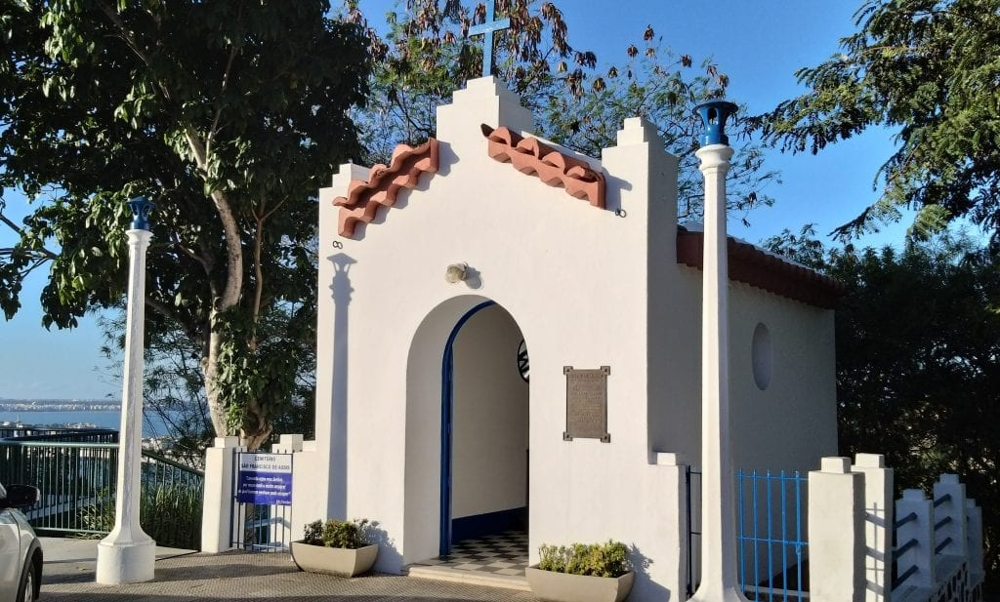
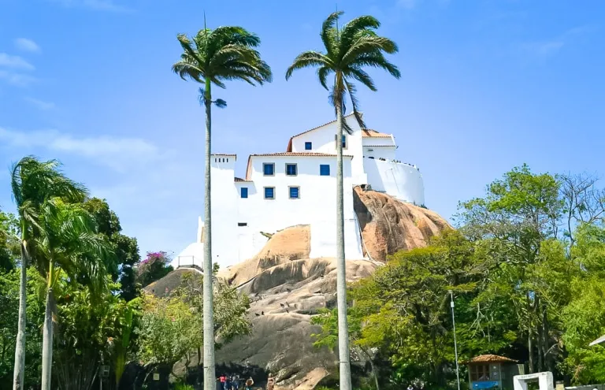
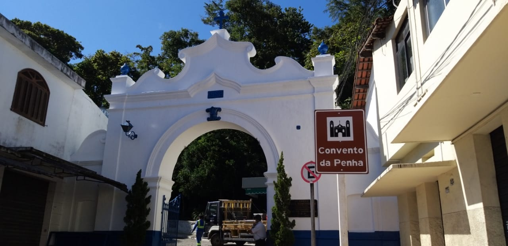
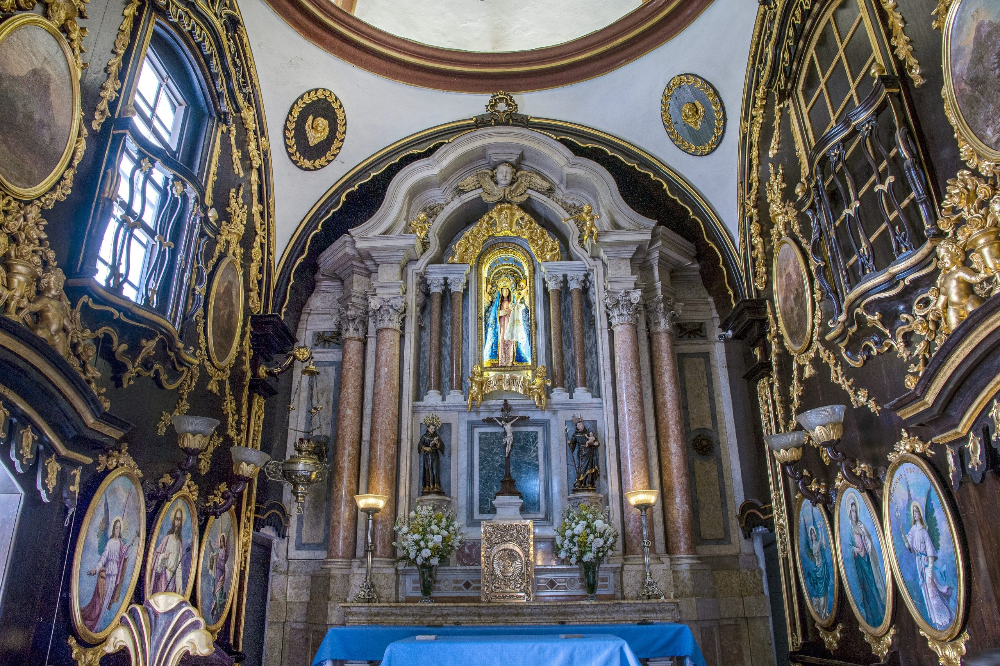

Construído a partir de 1558 no alto de um penhasco, o Convento fica pertinho do ponto exato onde desembarcaram os primeiros portugueses que chegaram ao Espírito Santo, e, também por isso, qualquer viagem fica incompleta sem uma visita a ele.
Além disso, a vista é maravilhosa: dá para ver a Terceira Ponte – uma das mais altas do Brasil -, a entrada da Baía de Vitória, as muitas ilhas e ilhotas da costa capixaba, as praias e as montanhas ao fundo. Além disso, você pode participar das várias missas celebradas durante todo o dia.
Padroeira do Espírito Santo
A imagem original que deu origem a toda a história do Convento da Penha é a de Nossa Senhora da Alegria. Aquela que ficou em um altar simples perto da gruta onde Frei Pedro Palácios começou a conquistar a atenção de quem morava ou passava por perto.
Dá para ver a imagem original quando você for visitar o Convento da Penha: ela fica em um quadro, na parede á direita do altar, dentro da capela principal.
O Convento de Nossa Senhora da Penha é o um dos santuários de devoção mariana mais antigos do Brasil. Localizado num penhasco de 154 metros de altitude, com vista privilegiada para as cidades de Vitória e Vila Velha, a 500 metros do mar; abrange uma área de 632.226 m2, que ostenta no seu entorno imponente e preservada parte da mata atlântica. O Santuário de Nossa Senhora da Penha foi fundado por Frei Pedro Palácios, um frade espanhol que aqui chegou em 1558, trazendo consigo o Painel de Nossa Senhora das Alegrias.
   
No interior do Convento, o espaço mais expressivo é o da Igreja com sua preciosa Capela-Mor. Revestido, parcialmente com madeira em cedro, entalhada com motivos fitomorfos, executada pelo escultor português José Fernandes Pereira, nos anos de 1874 a 1879, inclusive o assoalho com trabalho de marchetaria que no ano de 1980 foi reformado.
Festa da Penha
A Festa da Penha é celebrada todos os anos na segunda-feira depois da oitava de Páscoa e é precedida por um oitavário que começa no domingo de Páscoa. O evento já acontece há 454 anos.
Dicas para visitação ao Convento da Penha em Vila Velha
- Levante cedo para evitar as filas.
- Leve água e um lanche para se alimentar durante a visita.
- Use protetor solar e chapéu para se proteger do sol.
- É recomendado usar sapatos confortáveis, pois a subida ao convento é íngreme.
- Comece seu passeio visitando a igreja do convento.
- Depois, visite o claustro e o museu.
- Se você tiver tempo, participe de uma missa ou romaria.
Informações úteis sobre o Convento da Penha
Estado: Espírito Santo
Cidade: Vila Velha
Festa da penha: É o maior evento religioso do Estado, e a terceira maior festividade mariana do
Brasil, e que completa neste ano 449 anos de festividades ininterruptas.
Obra e arte: Há no Convento da Penha obras de arte de vários autores, de várias épocas,
destacando-se as de Benedito Calixto, de Vitor Meireles e as de Carlo Crepaz.
Nave extraterrestre: Em uma Romaria dos Homens, em 1988, um dentista diz ter visto uma
extraterrestre. Segundo ele, durante a missa da Romaria dos Homens, em frente à capela São Francisco, avistou um
ponto luminoso que alternava cores, entre o laranja, o azul e o vermelho.
Missas
De segunda a sexta: 6h – 7h – 9h30 – 15h
Sábado: 6h – 7h30 – 9h – 11h – 15h30
Domingo: 5h – 7h – 9h – 11h – 14h – 16h
Secretaria e Lanchonete
Diariamente: das 7h30 às 16h30
Tel.: (27) 3329-0420
Confissões
Diariamente: das 8h às 11h e das 14h às 16h
(O atendimento de Confissões pode ser encerrado antes dos horários acima)
Sala dos Milagres
Diariamente: das 8h às 16h30
Sala de Exposições
De quarta a domingo: de 8h às 12h e das 12h30 às 16h30
Capelinha de São Francisco
Diariamente: das 7h30 às 16h30
Portão Principal
De segunda a sábado: das 5h30 às 16h45
Domingo: das 4h30 às 16h45
Vans de Transporte
De segunda a sábado: das 5h30 às 16h45
Domingo: das 4h30 às 16h45
Valor: R$5,00 (subida e descida) ou R$3,50 (subida ou descida)
Para mais detalhes visite Convento da Penha
Localização
Para se localizar com mais facilidade, dê uma olhada no mapa abaixo.